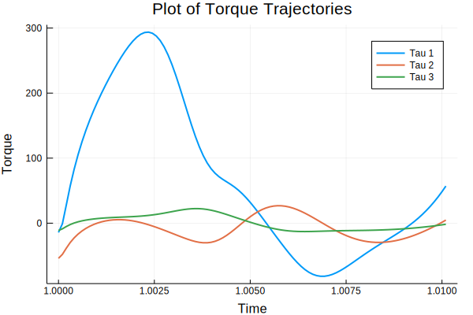

Examples
Here are some examples for Forward and Inverse Dynamics Trajectories.
Contents
Inverse Dynamics Trajectory
using ModernRobotics
import LinearAlgebra
const linalg = LinearAlgebra;Create a trajectory to follow using functions from Chapter 9:
thetastart = [0, 0, 0]
thetaend = [π / 2, π / 2, π / 2]
Tf = 3
N = 1000
method = 5
traj = JointTrajectory(thetastart, thetaend, Tf, N, method)
thetamat = copy(traj)
dthetamat = zeros(1000, 3)
ddthetamat = zeros(1000, 3)
dt = Tf / (N - 1.0)
for i = 1:size(traj, 1) - 1
dthetamat[i + 1, :] = (thetamat[i + 1, :] - thetamat[i, :]) / dt
ddthetamat[i + 1, :] = (dthetamat[i + 1, :] - dthetamat[i, :]) / dt
endInitialize robot description (example with 3 links):
g = [0, 0, -9.8]
Ftipmat = ones(N, 6)
M01 = [ 1 0 0 0 ;
0 1 0 0 ;
0 0 1 0.089159 ;
0 0 0 1 ]
M12 = [ 0 0 1 0.28 ;
0 1 0 0.13585 ;
-1 0 0 0 ;
0 0 0 1 ]
M23 = [ 1 0 0 0 ;
0 1 0 -0.1197 ;
0 0 1 0.395 ;
0 0 0 1 ]
M34 = [ 1 0 0 0 ;
0 1 0 0 ;
0 0 1 0.14225 ;
0 0 0 1 ]
Mlist = [M01, M12, M23, M34]
G1 = linalg.Diagonal([0.010267, 0.010267, 0.00666, 3.7, 3.7, 3.7])
G2 = linalg.Diagonal([0.22689, 0.22689, 0.0151074, 8.393, 8.393, 8.393])
G3 = linalg.Diagonal([0.0494433, 0.0494433, 0.004095, 2.275, 2.275, 2.275])
Glist = [G1, G2, G3]
Slist = [ 1 0 1 0 1 0 ;
0 1 0 -0.089 0 0 ;
0 1 0 -0.089 0 0.425 ]'
taumat = InverseDynamicsTrajectory(thetamat, dthetamat, ddthetamat, g, Ftipmat, Mlist, Glist, Slist)Plot the joint forces/torques:
using Plots
gr()
timestamp = range(1, Tf, length=N)
plot(timestamp, taumat[:, 1], linewidth=2, label="Tau 1")
plot!(timestamp, taumat[:, 2], linewidth=2, label="Tau 2")
plot!(timestamp, taumat[:, 3], linewidth=2, label="Tau 3")
xlabel!("Time")
ylabel!("Torque")
title!("Plot of Torque Trajectories")
Forward Dynamics Trajectory
dt = 0.1
intRes = 8
thetalist = [0.1, 0.1, 0.1]
dthetalist = [0.1, 0.2, 0.3]
taumat = [[3.63, -6.58, -5.57], [3.74, -5.55, -5.5],
[4.31, -0.68, -5.19], [5.18, 5.63, -4.31],
[5.85, 8.17, -2.59], [5.78, 2.79, -1.7],
[4.99, -5.3, -1.19], [4.08, -9.41, 0.07],
[3.56, -10.1, 0.97], [3.49, -9.41, 1.23]]
taumat = cat(taumat..., dims=2)'
thetamat, dthetamat = ForwardDynamicsTrajectory(thetalist, dthetalist, taumat, g,
Ftipmat, Mlist, Glist, Slist, dt, intRes)Plot the joint angle/velocities:
theta1 = thetamat[:, 1]
theta2 = thetamat[:, 2]
theta3 = thetamat[:, 3]
dtheta1 = dthetamat[:, 1]
dtheta2 = dthetamat[:, 2]
dtheta3 = dthetamat[:, 3]
N = size(taumat, 1)
Tf = size(taumat, 1) * dt
timestamp = range(0, Tf, length=N)
plot(timestamp, theta1, linewidth=2, label="Theta1")
plot!(timestamp, theta2, linewidth=2, label="Theta2")
plot!(timestamp, theta3, linewidth=2, label="Theta3")
plot!(timestamp, dtheta1, linewidth=2, label="DTheta1")
plot!(timestamp, dtheta2, linewidth=2, label="DTheta2")
plot!(timestamp, dtheta3, linewidth=2, label="DTheta3")
xlabel!("Time")
ylabel!("Joint Angles/Velocities")
title!("Plot of Joint Angles and Joint Velocities")
Simulate Control
Create a trajectory to follow:
thetaend = [π / 2, π, 1.5 * π]
Tf = 1
dt = 0.01
N = round(Int, Tf / dt)
method = 5
traj = JointTrajectory(thetalist, thetaend, Tf, N, method)
thetamatd = copy(traj)
dthetamatd = zeros(N, 3)
ddthetamatd = zeros(N, 3)
dt = Tf / (N - 1)
for i = 1:size(traj, 1)-1
dthetamatd[i + 1, :] = (thetamatd[i + 1, :] - thetamatd[i, :]) / dt
ddthetamatd[i + 1, :] = (dthetamatd[i + 1, :] - dthetamatd[i, :]) / dt
endCreate a (possibly) wrong robot description:
gtilde = [0.8, 0.2, -8.8]
Mhat01 = [1 0 0 0 ;
0 1 0 0 ;
0 0 1 0.1 ;
0 0 0 1 ]
Mhat12 = [ 0 0 1 0.3 ;
0 1 0 0.2 ;
-1 0 0 0 ;
0 0 0 1 ]
Mhat23 = [1 0 0 0 ;
0 1 0 -0.2 ;
0 0 1 0.4 ;
0 0 0 1 ]
Mhat34 = [1 0 0 0 ;
0 1 0 0 ;
0 0 1 0.2 ;
0 0 0 1 ]
Mtildelist = [Mhat01, Mhat12, Mhat23, Mhat34]
Ghat1 = linalg.Diagonal([0.1, 0.1, 0.1, 4, 4, 4])
Ghat2 = linalg.Diagonal([0.3, 0.3, 0.1, 9, 9, 9])
Ghat3 = linalg.Diagonal([0.1, 0.1, 0.1, 3, 3, 3])
Gtildelist = [Ghat1, Ghat2, Ghat3]
Ftipmat = ones(size(traj, 1), 6)
Kp = 20
Ki = 10
Kd = 18
intRes = 8
taumat, thetamat = SimulateControl(thetalist, dthetalist, g, Ftipmat, Mlist, Glist,
Slist, thetamatd, dthetamatd, ddthetamatd, gtilde,
Mtildelist, Gtildelist, Kp, Ki, Kd, dt, intRes)Finally, plot the results:
N, links = size(thetamat)
Tf = N * dt
timestamp = range(0, Tf, length=N)
plot()
for i = 1:links
plot!(timestamp, thetamat[:, i], lw=2, linestyle=:dash, label="ActualTheta $i")
plot!(timestamp, thetamatd[:, i], lw=2, linestyle=:dot, label="DesiredTheta $i")
end
xlabel!("Time")
ylabel!("Joint Angles")
title!("Plot of Actual and Desired Joint Angles")